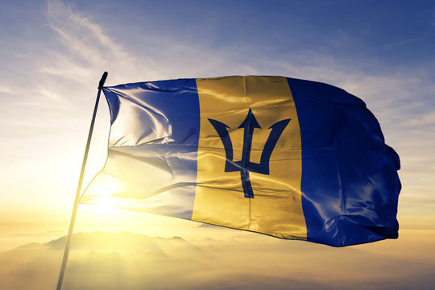

BAJAN STORIES
Barbados is a very special place, and Barbadians are very special people who have many stories to tell. A few you might have already heard, like the one about our hometown sweetheart and mega-star Rihanna, or about cricketing legend, our very own Sir Garfield Sobers. But we have so much more to share with the world and here is where you can read more! Barbados is an eastern Caribbean island and an independent British Commonwealth nation. Bridgetown, the capital, is a cruise-ship port with colonial buildings and Nidhe Israel, a synagogue founded in 1654. Around the island are beaches, botanical gardens, the Harrison’s Cave formation, and 17th-century plantation houses like St. Nicholas Abbey. Local traditions include afternoon tea and cricket, the national sport.
Barbados, an island in the southeastern Caribbean, lies northeast of Venezuela and is part of the Lesser Antilles. It spans 430 sq. km (166 sq. mi) with a 97 km (60 mi) coastline, and its highest point is Mount Hillaby at 340 m (1,115 ft). Barbados has a tropical climate with year-round temperatures of 26-30°C (79-86°F). The dry season runs from December to May, and the wet season from June to November, with occasional hurricanes. Barbados' culture blends African, British, and Caribbean influences. English is the official language, with Bajan widely spoken. Festivals like Crop Over, calypso and soca music, and local cuisine featuring flying fish and cou-cou are cultural highlights. A parliamentary republic since 2021, Barbados gained independence from the UK in 1966. The President is head of state, and the Prime Minister leads the government. It is a member of CARICOM, the Commonwealth, and the UN. Tourism and finance drive the economy, with attractions like Bridgetown (a UNESCO site), historic plantations, and pristine beaches. Distances from major cities: - London: 4,200 km (2,610 mi) - New York: 3,400 km (2,110 mi) - Miami: 2,600 km (1,615 mi)
5 Things You Should Know When Visiting Barbados
- Barbados has stunning beaches, from calm turquoise waters on the west coast to surf-friendly waves on the east coast.
- Public transportation is affordable and efficient, with buses, minibusses, and taxis available.
- The island is known for its delicious cuisine, including flying fish, cou-cou, and Bajan macaroni pie.
- Barbados is rich in history, with attractions like St. Nicholas Abbey and George Washington House.
- The local currency is the Barbadian dollar (BBD), but US dollars are widely accepted.